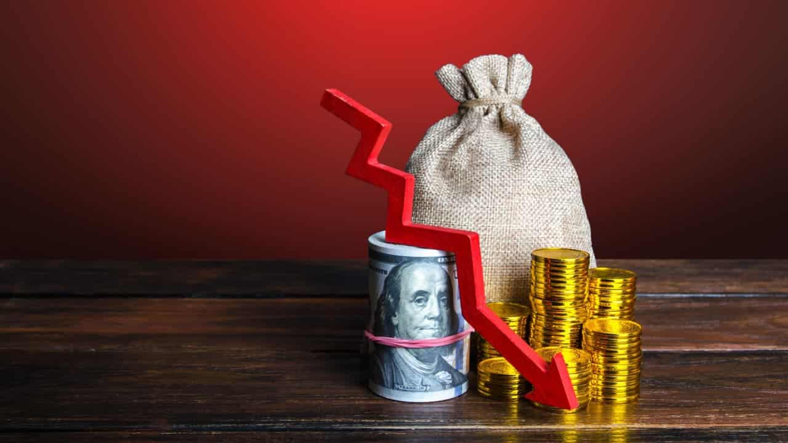
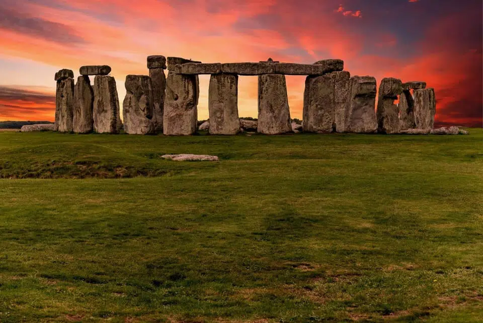

Inicio
Que esta quarta-feira à noite seja uma pausa merecida. Respire fundo, relaxe e se prepare para continuar sua jornada com ainda mais força amanhã. 🌟

Recarregar as energias hoje é investir nas vitórias de amanhã...
Finanças💰
Falência de Dois Grandes Bancos
Recentemente, o Banco Central do Brasil anunciou que dois grandes bancos estão à beira da falência, uma situação que levanta preocupações significativas sobre a estabilidade do sistema financeiro nacional. Este evento é um reflexo de diversos fatores econômicos e financeiros que afetam a operação dessas instituições.
- Motivos da Falência: A falência dos bancos é atribuída a uma combinação de má gestão, exposição a riscos elevados e a deterioração das condições econômicas. O aumento da inadimplência e a falta de liquidez são fatores críticos que contribuíram para essa situação.
- Impacto no Sistema Financeiro: A falência de grandes bancos pode desencadear uma crise de confiança no sistema financeiro, levando a um efeito dominó que pode afetar outras instituições e a economia como um todo. A possibilidade de corridas bancárias, onde os clientes retiram seus depósitos em massa, é uma preocupação imediata.
- Medidas do Banco Central: O Banco Central está monitorando a situação de perto e pode implementar medidas para mitigar os impactos da falência, como a injeção de liquidez ou a facilitação de fusões com bancos mais sólidos.
- Repercussões para os Clientes: Clientes desses bancos devem estar cientes das implicações, incluindo a possibilidade de perda de depósitos e a necessidade de buscar alternativas para a gestão de suas finanças.
A declaração do Banco Central sobre a iminente falência de dois grandes bancos é um sinal de alerta para o setor financeiro brasileiro. A situação exige vigilância e ação rápida para evitar uma crise mais ampla.
O acompanhamento contínuo das medidas que serão adotadas pelo Banco Central e a resposta do mercado serão cruciais para a recuperação da confiança no sistema financeiro.
Teconologia👨💻
Otimize Seu Android com Ajustes Simples nas Configurações de Animação

Smartphones Android ficarem mais lentos com o tempo é uma realidade frustrante para muitos usuários. No entanto, existe uma solução simples para acelerar seu dispositivo Android: ajustar as configurações de animação.
Ao modificar a velocidade de animações como a "Escala de animação de janela", "Escala de animação de transição" e "Escala de duração de animação", você pode obter uma melhora significativa no desempenho do seu celular
Para acessar essas configurações avançadas:
- Vá para "Configurações" > "Informações do telefone" e clique 7 vezes no "Número de compilação" para ativar as opções de desenvolvedor.
- Volte para "Configurações" e encontre "Opções do desenvolvedor".
- Na seção "Desenho", ajuste as escalas de animação para uma velocidade mais rápida.
Ao reduzir o tempo de animação, você evitará travamentos e lentidão, desfrutando de um celular mais ágil e eficiente no dia a dia.
Essa modificação simples nas configurações do Android pode transformar drasticamente a experiência do usuário, tornando seu smartphone mais responsivo e prazeroso de usar. Então, se seu Android está ficando lento, experimente esses ajustes nas animações e sinta a diferença!
Educação📚
Brasil Atinge Meta nos Anos Iniciais do Ensino Fundamental no Ideb 2023
O Ministério da Educação (MEC) e o Instituto Nacional de Estudos e Pesquisas Educacionais Anísio Teixeira (Inep) divulgaram os resultados do Índice de Desenvolvimento da Educação Básica (Ideb) 2023, principal indicador da qualidade da educação no país. De acordo com os dados, o Brasil alcançou a meta estabelecida para o primeiro ciclo do indicador (2007-2021), atingindo 6 pontos nos anos iniciais do ensino fundamental (do 1º ao 5º ano).
"O Ideb é o mais importante indicador educacional de educação básica. Não há nenhuma política pública que tenha êxito sem ter metas, sem ter objetivos, sem ter planejamento, sem ter estratégia. Portanto, esse é um encontro importante para a educação brasileira. Os números vão nortear o planejamento, os caminhos, os passos seguintes para a educação básica do nosso país", afirmou o ministro da Educação, Camilo Santana.
Nos anos finais do ensino fundamental (do 6º ao 9º ano), o Brasil alcançou 5 pontos, ficando abaixo da meta de 5,5. Já o ensino médio registrou 4,3 pontos, também aquém da meta de 5,2 estabelecida para essa etapa.
Quando comparados os resultados de proficiência padronizada do Ideb (matemática e leitura) entre 2021 e 2023, 96% dos estados (26) melhoraram o desempenho nos anos iniciais; 59% (16 estados) nos anos finais; e 65% (17 estados) no ensino médio.
"O Ideb funciona como um norte para as tomadas de decisões na educação básica, determinando o que deve ser melhorado no ensino e garantindo que a construção dos programas e das iniciativas seja feita de forma a assegurar o atendimento das necessidades da população", explicou Camilo Santana.
Apesar do avanço nos anos iniciais, o ministro ressaltou a importância de o MEC seguir atuando junto aos entes federados para superar as desigualdades educacionais, especialmente nos anos finais do ensino fundamental e no ensino médio. Para enfrentar esses desafios, o governo federal vem investindo em programas como o Escola em Tempo Integral, o Pé-de-Meia e a expansão da educação profissional e tecnológica integrada ao ensino médio.
Política🗳
Ministros do STF Defendem Legalidade das Ações de Moraes; Barroso Classifica Situação como "Tempestade Fictícia"

Na quarta-feira, 14 de agosto, o ministro Alexandre de Moraes, do Supremo Tribunal Federal (STF), se defendeu de acusações de que teria solicitado informações de forma não oficial sobre aliados do ex-presidente Jair Bolsonaro. Moraes enfatizou a legalidade de suas ações, afirmando que a repercussão das reportagens não o preocupa e que, como presidente do Tribunal Superior Eleitoral (TSE) durante as eleições de 2022, tinha a autoridade para requisitar relatórios.
Durante a sessão do STF, Moraes descreveu como "esquizofrênico" a ideia de se auto-oficiar para obter informações da Justiça Eleitoral, destacando que tinha o poder legal de determinar a produção de relatórios. Ele também ressaltou que as informações solicitadas eram públicas e referiam-se a pessoas sob investigação, não configurando uma investigação policial.
Os ministros Flávio Dino, Luís Roberto Barroso e Gilmar Mendes expressaram apoio a Moraes, considerando suas ações dentro da legalidade. Barroso classificou a controvérsia como uma "tempestade fictícia", afirmando que os dados solicitados eram de domínio público e estavam disponíveis nas redes sociais. Dino e Mendes também defenderam a integridade das investigações conduzidas por Moraes, destacando que não houve violação das normas jurídicas.
As acusações surgiram a partir de reportagens que indicaram que Moraes teria solicitado, informalmente, relatórios ao TSE sobre aliados de Bolsonaro, que foram utilizados em inquéritos sobre fake news e milícias digitais. O gabinete de Moraes reafirmou que todas as solicitações foram feitas de acordo com os procedimentos regimentais e que os relatórios estavam devidamente documentados.
A situação gerou reações políticas, com figuras como Gleisi Hoffmann e Rogério Correia defendendo a atuação de Moraes como essencial para garantir a lisura do processo eleitoral e evitar tentativas de golpe. A tensão em torno das ações de Moraes continua a ser um tema de debate no cenário político brasileiro, refletindo a polarização existente no país.
Ciência
Estudo Revela Verdadeira Origem da Pedra do Altar de Stonehenge
Um novo estudo publicado na revista Nature identifica a verdadeira origem da Pedra do Altar de Stonehenge, um dos monumentos pré-históricos mais emblemáticos do mundo. Pesquisadores da Universidade de Aberystwyth, no Reino Unido, analisaram amostras da pedra e descobriram que ela não provém da fonte previamente identificada, mas sim de uma nova localidade em Pembrokeshire, no País de Gales.
A Pedra do Altar, que faz parte do círculo de pedras de Stonehenge, foi tradicionalmente associada a uma origem em uma pedreira conhecida como Craig Rhos-y-felin. No entanto, a nova pesquisa sugere que a pedra foi extraída de uma área diferente, o que pode alterar a compreensão sobre a construção e o transporte das pedras para o local de Stonehenge.
Os cientistas utilizaram técnicas avançadas de análise mineral para traçar a composição química da pedra, revelando diferenças significativas em relação às amostras da pedreira anteriormente considerada. Essa descoberta não apenas reescreve a história da construção de Stonehenge, mas também levanta novas questões sobre as técnicas e os métodos utilizados por sociedades pré-históricas para mover grandes blocos de pedra.
Os pesquisadores acreditam que a nova localização da pedreira pode oferecer insights sobre as práticas culturais e sociais dos povos que ergueram Stonehenge, além de contribuir para o entendimento mais amplo da engenharia e da organização social na pré-história.
Essa pesquisa representa um avanço significativo na arqueologia e na história da Grã-Bretanha, desafiando concepções estabelecidas e incentivando novas investigações sobre um dos monumentos mais estudados e admirados do mundo.
Extra✨
Quarta-feira à noite é o momento perfeito para fazer uma pausa e se reconectar com suas prioridades. Aqui estão algumas sugestões para aproveitar sua noite:
- Avalie o progresso da semana 📝: Revise suas metas e veja o que já foi alcançado. Fazer ajustes no meio da semana pode aumentar sua produtividade.
- Faça uma refeição balanceada 🥗: Prepare um jantar leve, porém nutritivo, para recarregar as energias sem pesar na digestão.
- Pratique um hobby relaxante 🎶: Dedique um tempo a atividades que você ama, como tocar um instrumento, pintar ou simplesmente ouvir música.
- Saia para uma caminhada 🌳: Aproveite o frescor da noite para uma caminhada tranquila. Estar em contato com a natureza pode ser revigorante.
- Desconecte-se das preocupações 📵: Tire um tempo para si mesmo, longe das redes sociais e das preocupações do dia a dia. Relaxar é essencial para manter o equilíbrio.